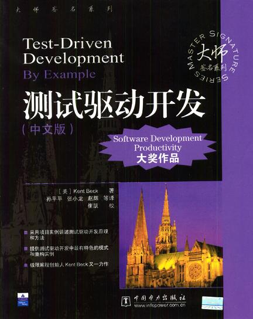
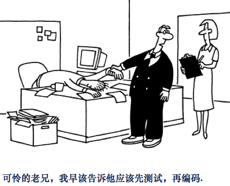

你的浏览器不支持 impress.js, 所以当前展示的是简化版。
为了获得更好的体验，请使用最新的 Chrome, Safari 或者 Firefox 浏览器。
Kent Beck 先生最早在其极限编程（英语：Extreme programming，缩写为XP）方法论中，向大家推荐“测试驱动”这一最佳实践，还专门撰写了《测试驱动开发》一书，详细说明如何实现。经过几年的迅猛发展，测试驱动开发已经成长为一门独立的软件开发技术，其名气甚至盖过了极限编程。

测试驱动开发（Test Driven Development,缩写TDD）是极限编程的一个重要组成部分，它的基本思想就是在开发功能代码之前，先编写测试代码。
也就是说在明确要开发某个功能后，首先思考如何对这个功能进行测试，并完成测试代码的编写，然后编写相关的代码满足这些测试用例。然后循环进行添加其他功能，直到完成全部功能的开发。
实例演示 （语法）
describe("[Angular-Scope]", function() {
describe("digest", function(){
var scope;
beforeEach(function(){
scope = new Scope();
});
it("calls the listener function of a watch on first $digest", function() {
var watchFn = function() { return 'wat'; };
var listenerFn = jasmine.createSpy();
scope.$watch(watchFn, listenerFn);
scope.$digest();
expect(listenerFn).toHaveBeenCalled();
});
});
});
常用前端 JS 的测试用例：
TDD的负面看法：
TDD的负面看法：
TDD的负面看法：
That's all , thank you !